| 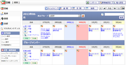 |
日報 週間
週間表示で日報を表示します。 |
|---|---|
| 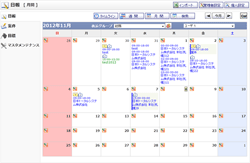 |
日報 月間
月間表示で日報を表示します。 |
| 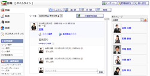 |
日報 タイムライン
日間表示で日報を表示します。 |
| 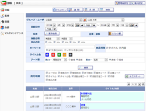 |
日報一覧
詳細な検索条件を入力し日報の一覧を表示します。 |
| 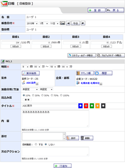 |
日報 新規登録
・
確認・編集
日報の登録を行います。 |
| 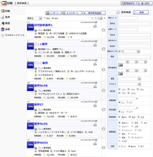 |
案件検索
案件検索を行います。 |
| 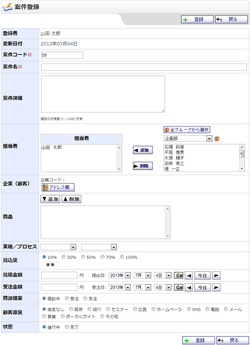 |
案件 新規登録
・
確認・編集
日報の登録を行います。 |
| 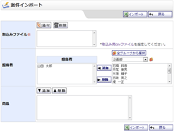 |
案件インポート
・
確認
案件のインポートを行います。 |
| 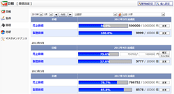 |
目標設定
目標設定を行います。 |
| 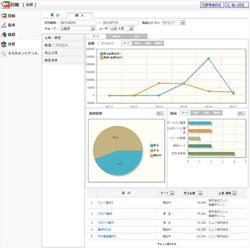 |
分析
分析 |
| 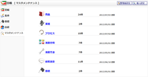 |
マスタメンテナンス
マスタメンテナンス |
| 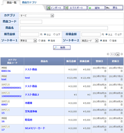 |
商品一覧
商品一覧画面です。 |
| 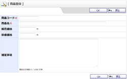 |
商品 新規登録
・
確認・編集
商品の登録を行います。 |
| 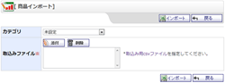 |
商品インポート
・
確認
商品のインポートを行います。 |
| 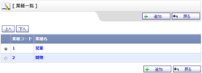 |
業種一覧
業種一覧画面です。 |
 |
業種 新規登録
・
確認・編集
業種の登録を行います。 |
| 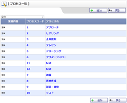 |
プロセス一覧
プロセス一覧画面です。 |
| 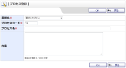 |
プロセス 新規登録
・
確認・編集
プロセスの登録を行います。 |
| 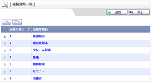 |
活動分類一覧
活動分類一覧画面です。 |
| 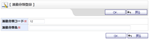 |
活動分類 新規登録
・
確認・編集
活動分類の登録を行います。 |
| 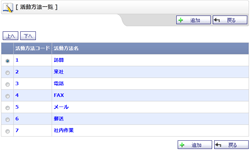 |
活動方法一覧
活動方法一覧画面です。 |
 |
活動方法 新規登録
・
確認・編集
活動方法の登録を行います。 |
| 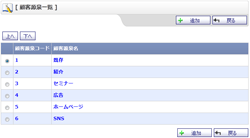 |
顧客源泉一覧
顧客源泉一覧画面です。 |
| 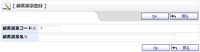 |
顧客源泉 新規登録
・
確認・編集
顧客源泉の登録を行います。 |
| 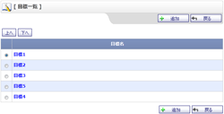 |
目標一覧
目標一覧画面です。 |
| 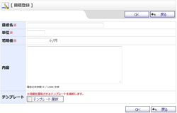 |
目標 新規登録
・
確認・編集
目標の登録を行います。 |
| 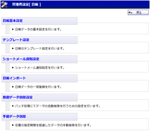 |
管理者設定
日報機能に関する管理者設定を行います。 |
| 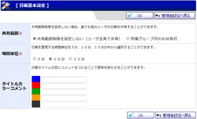 |
日報 基本設定
日報機能に関する基本設定を行います。 |
| 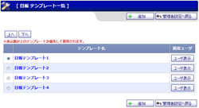 |
日報テンプレート一覧
日報テンプレートの一覧画面です。 |
| 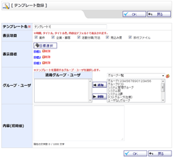 |
日報テンプレート登録
日報テンプレートの登録画面です。 |
| 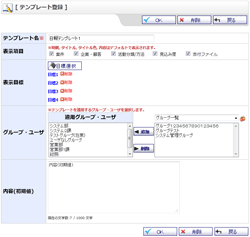 |
日報テンプレート編集
日報テンプレートの編集画面です。 |
| 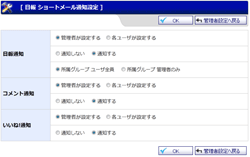 |
日報ショートメール通知設定
日報通知設定画面です。 |
| 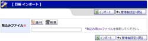 |
日報インポート
・
確認（管理者設定）
ユーザ単位、または、グループ単位の日報のインポートを行います。 |
| 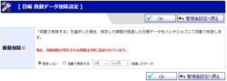 |
自動データ削除設定
指定期間が経過した古い日報データを自動で削除する設定を行います。 |
| 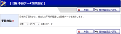 |
手動データ削除設定
手動で、日報終了日時から指定した年月が経過した日報データを削除します。 |
| 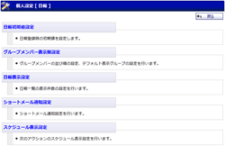 |
個人設定
日報機能に関する個人設定を行います。 |
| 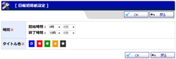 |
初期値設定
日報機能に関する初期値設定を行います。 |
| 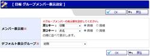 |
グループメンバー表示設定
グループメンバーの並び順の設定、デフォルト表示グループの設定を行います。 |
| 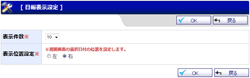 |
日報表示設定
日報の表示件数の設定を行います。 |
| 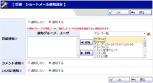 |
ショートメール通知設定
日報登録時のショートメール通知の設定を行います。 |
| 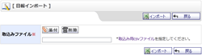 |
日報インポート
・
確認
ユーザ単位の日報のインポートを行います。 |